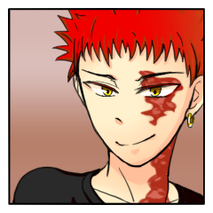
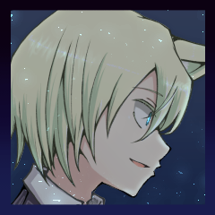

クライマックスフェイズ
GM
不意に、市内にサイレンが鳴り響きます。人も減ってきた時間帯ではありましたが、それでも酔っ払いや散歩の人々が、ちょっと驚いた顔をして……しかし慌てるでもなく、屋内に引っ込んでいきます。
外に出してるベンチを手際よく片付けてる店員なんかも見えます。
Valeria Anselmi
「連合の知り合いに無理言って、市庁舎のアックア・アルタ警報を流してもらったの」
彼女の解説が耳に入る位置にいるかはともかく。
Valeria Anselmi
「普段なら、せいぜい2階か3階ぐらいまで水に浸かるぐらいの現象なんだけど、失敗したら……ま、文句言われるのは私だから」
住民にとって聞き慣れたそれは、街にいる人魔だれでも聞き取ることができるだろう。

カイジ
「成る程なァ。
気兼ねなくやれるってェわけか」
ユヅキ
「………………」やるぞ、の気合を入れている。
Valeria Anselmi
「変に避難させたり外に出たままの人を護りながらなんて、流石に人手が足りないからねー」
ソーニャ
「しかしまあ、ヴェネツィアくんだりまで来て古龍とはねー」建物の高いところから目元に手のひらを翳し、都市を睥睨しています。
カイジ
「面白がってる暇があればいいけどなァ」
ソーニャが来ることは分かっていたかのように、居ることには特にリアクションなく。
ソーニャ
「オレは最初から”面白い”ものを見るのが目的だ」
ソーニャ
「つまり、当事者たる若人の頑張りにかかってるというわけだ」
カイジ
「……ま、それもそうか。
こちとら"手伝っていただいてる"わけだしなァ」
肩を竦めた。
ユヅキ
「今はこっち側に居て、一緒に戦ってくれるってこと」
ナバリ
決戦を前に覚悟を分かち合う君たちは、視界の端にその姿を捉えるかもしれない。
水際の近く、足取りの覚束ない、"彼女"の姿。
ナバリ
名を呼ばれれば、反応を返すように身体をわずか揺らす。
ナバリ
そうして、ユヅキの方へ、振り返って――――
ユヅキ
向けられた瞳、明らかにぶつけられている敵意。
伴 護伴
「水路という水路に妙なのが入り込んでます、なるべく水辺から離れてくだ――」
ナバリ
待っていた。ずっと、待ち焦がれていた。"今の私"が、求めていたもの。
気配を感じれば、そちらへ一瞥をやり――
ナバリ
改めて、ユヅキ達に向き直る。ナイフを、構えて。
水怪(1)
ずるり、と音を立てて、ナバリの後ろを固めるように魔の者が上がってくる。
水怪(2)
先触れは声を発さない。声で知らせる必要がない故に。
古龍
これだけ人間を待たせたその挙げ句に、実にゆっくりとその身を夜風に晒す。
伴 護伴
「遅刻ですよ。僕はまあ、ギリギリセーフだったというのは理解しました」
古龍
癪に障ったか、あるいはむしろ眼中にないのだろうか。
古龍
"それ"は真っ直ぐユヅキを見て、忍びし者どもへ咆哮を発した。
GM
クライマックスフェイズ、初期戦場は平地です。ラウンド数制限はありません。
GM
お前らをぶっ殺すのに6ラウンドもいりませんよ、ははは。
GM
蒼海の珠を持ってるソーニャは RTT 、ナバリは MT をそれぞれ振って下さい。
ソーニャ
RTT ランダム指定特技表(2,12) ＞ 『体術』怪力
ナバリ
MT 異形表(6) ＞ 妖魔化している間、このキャラクターの攻撃に対する回避判定と、このキャラクターの奥義に対する奥義破り判定にマイナス1の修正がつく。
GM
ソーニャ君は珠を持っている間、「怪力」を習得した扱いとします。
ソーニャ
今オレ妖術より体術の特技のが多いんだけど。
GM
ナバリは戦闘中、その効果と、あと生命力が潰れても全特技が使用可能な状態になります。ただ、妖魔化自体の効果で生命力1潰しておいてください、器術でいいと思う(
GM
あとナバリは毎ラウンド生命力1削ってMTガチャができます 人間から離れていくのでおすすめはしません(
ソーニャ
やればやるほど制御判定で帰ってこられなくなる確率があがります。
ナバリ
これは実際に生命力1削れたのと同様ってこと？
クライマックスフェイズ ラウンド1
GM
ではプロットに入りましょう。プロットきーめたって人は、PC番号の上にダイスを移動させてください
ナバリ
あ、とりあえず様子見で影分身無しで大丈夫です
[ ソーニャ ] がダイスシンボルを公開。出目は 4 です。
[ ユヅキ ] がダイスシンボルを公開。出目は 4 です。
[ カイジ ] がダイスシンボルを公開。出目は 3 です。
[ Valeria Anselmi ] がダイスシンボルを公開。出目は 3 です。
[ ナバリ ] がダイスシンボルを公開。出目は 2 です。
[ 伴 護伴 ] がダイスシンボルを公開。出目は 2 です。
[ 水怪(1) ] がダイスシンボルを公開。出目は 1 です。
[ 水怪(2) ] がダイスシンボルを公開。出目は 1 です。
[ 古龍 ] がダイスシンボルを公開。出目は 1 です。
GM
かっこいい顔でKIAI溜め。はい、ソーニャ君。
ソーニャ
MT 異形表(5) ＞ 妖魔化している間、【接近戦攻撃】によって与える接近戦ダメージが2点になる。
ソーニャ
2D6>=5 （判定：異形化） (2D6>=5) ＞ 12[6,6] ＞ 12 ＞ スペシャル(【生命力】1点か変調一つを回復)
ソーニャ
じゃあノリノリでRPさせていただきますね。
ソーニャ
「東方が九尾狐の裔にして、テウメッサの狐の流れを汲む者」
ソーニャ
まだ三尾の若き狐が、それでも古き龍に臆すことなく。
ソーニャ
＊手番の行動が残ってますね、血旋渦を古龍に。
ソーニャ
2D6>=5 （判定：異形化） (2D6>=5) ＞ 9[3,6] ＞ 9 ＞ 成功
ソーニャ
こっちのほうがマシだな、霊装から呪術で回避を。
古龍
2D6>=8 （判定：伝達術）そりゃあ効いてくれないと困る。 (2D6>=8) ＞ 9[3,6] ＞ 9 ＞ 成功
ソーニャ
若き狐のひと睨みに、古龍へと爪の撃が飛ぶ。
古龍
その挑戦に対して、龍は鼻を鳴らした……ように思われた。意を受けた魔が直ちに割って入り、その爪先を逸らす。
Valeria Anselmi
1d100 (1D100) ＞ 38
カイジ
2D6>=5 （判定：砲術） (2D6>=5) ＞ 5[1,4] ＞ 5 ＞ 成功
水怪(1)
2D6>=7 （判定：水術） (2D6>=7) ＞ 8[2,6] ＞ 8 ＞ 成功
古龍
2d6-1>=7 水術 => 回避:砲術 (2D6-1>=7) ＞ 7[3,4]-1 ＞ 6 ＞ 失敗
[ 古龍 ] 生命力 : 20 → 19
カイジ
的は大きい。
先の相手とは違う、無駄に巨大な図体めがけて。
「食らっとけ！」
古龍
昔なら矢が放たれていたところだが、ここは現代。爆発の煙が晴れると、冷たい瞳が君を睨む。
Valeria Anselmi
回避判定が本番だからいいつつパスです。プロット2。1d100高い方から。
ナバリ
まあやることできること一つしかないけども…そうだなー
ナバリ
カイジ殴ってうっかり体術潰しても困るからヴァレリアを接近戦攻撃で殴ろうかな
ナバリ
2D6>=5 （判定：隠形術） (2D6>=5) ＞ 9[4,5] ＞ 9 ＞ 成功
Valeria Anselmi
2D6>=7 （判定：香術） (2D6>=7) ＞ 3[1,2] ＞ 3 ＞ 失敗
Valeria Anselmi
ふぁんぶった......
ナバリ
えーと回避できないからこのまま1D6で指定？
Valeria Anselmi
えー、はい、そうですね。神通持ってないんですよこのひと。
ナバリ
っぶねーマジでカイジ相手だったら事故ってるとこだった。
[ Valeria Anselmi ] 体術 : 1 → 0
Valeria Anselmi
何も持ってないからセーフ。
ナバリ
――ふらり、と怪しげな動きをすると同時に、ナバリの姿が眼中から掻き消える。次の瞬間、ヴァレリアの背後に現れ、強く打撃を加える。
Valeria Anselmi
「ナバリ、」思わず伸ばした手は空振り、無抵抗と大差ない様相で叩かれる。
古龍
その様子を双眸が見下ろしていたが、すぐにその不躾な視線が外れる。
伴 護伴
「自分のことではないとはいえ、仕掛け人にそう見下されるのを見るのは気に食わないですね」
伴 護伴
2D6>=5 （判定：野戦術） (2D6>=5) ＞ 7[3,4] ＞ 7 ＞ 成功
古龍
2D6>=8 （判定：毒術） (2D6>=8) ＞ 12[6,6] ＞ 12 ＞ スペシャル(【生命力】1点か変調一つを回復)
古龍
2D6>=8 （判定：毒術） (2D6>=8) ＞ 8[3,5] ＞ 8 ＞ 成功
ソーニャ
「活きがいいねえ、長らく眠ってたとは思えない！」
ソーニャ
なんか自己回復しそうな素振りだけ阻止しましたが、さすがに当てさせられなかったな。
古龍
プロット1～。舐めプなので古龍は【見越】して終わりです。
古龍
次から間合+1と射撃戦ダメージ1点を上乗せしてやるからな。
ソーニャ
間合いはどうせ狂骨あるから関係ないだろ。
古龍
どうせプロ1に飛び込んでくるやつ、いるし.... #もっと関係ないね
水怪(1)
で、普段なら適当に猟犬からPCを殴るんですけど、せっかく新入りのナバリがブレイクしてくれたのでヴァレリアを滅多打ちにします。
水怪(1)
猟犬からプロット3に移動してヴァレリアに接近戦攻撃。
水怪(1)
2D6>=5 （判定：水術） (2D6>=5) ＞ 4[1,3] ＞ 4 ＞ 失敗
水怪(2)
猟犬からプロット3に移動してヴァレリアに接近戦攻撃(テイク2)
水怪(2)
2D6>=5 （判定：水術） (2D6>=5) ＞ 7[1,6] ＞ 7 ＞ 成功
水怪(2)
1d6 回避不能なのでぽいぽい (1D6) ＞ 6
[ Valeria Anselmi ] 妖術 : 1 → 0
水怪(2)
何も持ってないですか、よかったですね。
水怪(2)
ラウンド終了～、お楽しみの【誘導】タイムです。
水怪(2)
2D6>=5 （判定：走法） (2D6>=5) ＞ 6[3,3] ＞ 6 ＞ 成功
水怪(1)
2D6>=5 （判定：走法） (2D6>=5) ＞ 5[1,4] ＞ 5 ＞ 成功
水怪(1)
どこかに遁甲符バカほど配ったやつがいたなと思ったので両方振りました
ソーニャ
５で通る判定に切り続けるのはちょっと分が悪いなあ。
GM
水辺に近づかないようにと少年は言った。しかし、近づかなくても、潮は向こうからやってくる。
GM
戦場が水中になります。ラウンド2のプロットをしよう。
クライマックスフェイズ ラウンド2
[ ユヅキ ] がダイスシンボルを公開。出目は 3 です。
[ Valeria Anselmi ] がダイスシンボルを公開。出目は 2 です。
[ ナバリ ] がダイスシンボルを公開。出目は 2 です。
[ ソーニャ ] がダイスシンボルを公開。出目は 2 です。
[ カイジ ] がダイスシンボルを公開。出目は 2 です。
[ 伴 護伴 ] がダイスシンボルを公開。出目は 2 です。
[ 水怪(1) ] がダイスシンボルを公開。出目は 2 です。
[ 水怪(2) ] がダイスシンボルを公開。出目は 2 です。
[ 古龍 ] がダイスシンボルを公開。出目は 1 です。
ユヅキ
2D6>=5 （判定：用兵術） (2D6>=5) ＞ 3[1,2] ＞ 3 ＞ 失敗
ユヅキ
2D6>=5 （判定：用兵術） (2D6>=5) ＞ 6[1,5] ＞ 6 ＞ 成功
[ 古龍 ] 判定+ : 0 → 1
古龍
2d6+1>=7 言霊術=> 回避:用兵術 これでいけっかな? (2D6+1>=7) ＞ 6[2,4]+1 ＞ 7 ＞ 成功
古龍
あ、説明漏れてる気がするけど、極意水中は龍宮だと勝手につくのでナバリにも入ります。
古龍
泳ぎの練習をする間はないぞ。プロット2はー うん たいへんだけどとりあえず1d100で。
Valeria Anselmi
1d100 (1D100) ＞ 58
伴 護伴
護伴=>魚2匹=>ヴァレリア=>ナバリ=>ソーニャ=>カイジ
伴 護伴
とはいえ魚は突っ切って古龍を殴るしかねえ。野戦術を執行だ。
伴 護伴
2d6>=5 (2D6>=5) ＞ 9[4,5] ＞ 9 ＞ 成功
古龍
2D6+1>=8 （判定：毒術） (2D6+1>=8) ＞ 6[1,5]+1 ＞ 7 ＞ 失敗
[ 古龍 ] 生命力 : 19 → 18
水怪(1)
2d3 (2D3) ＞ 4[1,3] ＞ 4
水怪(1)
2D6>=5 （判定：水術/接近戦攻撃） (2D6>=5) ＞ 9[3,6] ＞ 9 ＞ 成功
ユヅキ
2D6>=6+2 （判定：針術） (2D6>=8) ＞ 5[2,3] ＞ 5 ＞ 失敗
水怪(2)
2D6>=5 （判定：水術/接近戦攻撃）>カイジ (2D6>=5) ＞ 8[3,5] ＞ 8 ＞ 成功
カイジ
2D6-2>=7 （判定：砲術） (2D6-2>=7) ＞ 7[3,4]-2 ＞ 5 ＞ 失敗
水怪(2)
神通丸のお支払いになりますが、古龍はここから3点以上飛ばしてきます。
ユヅキ
あ、勘違いしてました、振り直しません！！！
水怪(1)
1d6 ユヅキの分 (1D6) ＞ 1
水怪(2)
1d6 カイジの分 (1D6) ＞ 4
[ カイジ ] 謀術 : 1 → 0
水怪(2)
水術の隣が死んだ分にはヨシとしますか。
[ ユヅキ ] 器術 : 1 → 0
[ ユヅキ ] 器術 : 1 → 0
Valeria Anselmi
2D6>=5 （判定：仕込み） (2D6>=5) ＞ 8[4,4] ＞ 8 ＞ 成功
古龍
2d6+1>=6 身体操術=> 回避:仕込み (2D6+1>=6) ＞ 8[3,5]+1 ＞ 9 ＞ 成功
ナバリ
水中だから回避判定-2かなんでも当たっちゃいそうだなあ。
ナバリ
仕方ない、もっかヴァレリアを接近戦攻撃で殴ります。すまんやで。
Valeria Anselmi
身体もメンタルもサンドバッグにされてる。どうぞー。
ナバリ
2D6>=5 （判定：隠形術） (2D6>=5) ＞ 4[1,3] ＞ 4 ＞ 失敗
Valeria Anselmi
そうなんですよね。
Valeria Anselmi
しねえよ。回避します。
Valeria Anselmi
2D6-2>=7 （判定：香術） (2D6-2>=7) ＞ 8[3,5]-2 ＞ 6 ＞ 失敗
Valeria Anselmi
あと1歩だったのに。
ナバリ
よし、被ったからフリーで潰せるやつだな（白目）
Valeria Anselmi
被りなんで謀術に逸らします。
[ Valeria Anselmi ] 謀術 : 1 → 0
Valeria Anselmi
サンドバッグになりながらも特技への被害は抑えているとされる。なおメンタル。
Valeria Anselmi
ソーニャ君いって最後にカイジ君です。
ソーニャ
2D6>=5 （判定：遊芸） (2D6>=5) ＞ 3[1,2] ＞ 3 ＞ 失敗
ナバリ
潮の流れには怯まない。彼女は速度を失わない――どころか、豹変した見た目をそのまま表すように、寧ろ上がっている。先の油断した姿を好機と見たか、更にヴァレリアへ追撃を加えた。
Valeria Anselmi
「ああ、もう、みんなにああ言っておいて……」
ソーニャ
2D6>=5 （判定：遊芸） (2D6>=5) ＞ 5[2,3] ＞ 5 ＞ 成功
古龍
2d6+1>=10 身体操術=> 回避:遊芸 遠いんだよなあこれ。 (2D6+1>=10) ＞ 4[2,2]+1 ＞ 5 ＞ 失敗
[ 古龍 ] 生命力 : 18 → 15
[ 古龍 ] 判定+ : 1 → 2
ソーニャ
でも一応確認するけどカイジへの回避にはまだ入らないよね？
[ 古龍 ] 判定+ : 2 → 1
ソーニャ
「まあ、やっぱりここは直接――だよねえ！」
古龍
己の戦場である海でここまでの狼藉を許すことなどあってはならぬ。しかし、それよりも、その蒼には覚えがある。
古龍
あの忌々しい宝物が、何故こいつの手にあるのか、古龍は知らぬ。知らぬが――知る必要など、ない。知ったところで、全てを流し去ってしまうのだから。
カイジ
「はッ、最初からそうしとけってんだ」
閃く光、剥がれる鱗に口角を上げ、自身も構える。
カイジ
2D6>=5 （判定：骨法術） (2D6>=5) ＞ 10[4,6] ＞ 10 ＞ 成功
カイジ
2D6>=5 （判定：見敵術） (2D6>=5) ＞ 7[3,4] ＞ 7 ＞ 成功
カイジ
通った！演出的に骨法術、狭霧で-1にてお願いします。
古龍
2d6+1-1>=7 怪力 => 回避:骨法術 (2D6+1-1>=7) ＞ 8[2,6]+1-1 ＞ 8 ＞ 成功
古龍
意外にも、あるいは妖魔らしく。真っ正面から力で押し返す。
カイジ
揮う徒手空拳も、水中では些か分が悪いか。舌打ち一つ。
[ 古龍 ] 判定+ : 1 → 2
古龍
狂骨+凶声+接近戦攻撃(接近1+見越の射撃1+水族の接近1)って言います。
古龍
まあどうせ頑健持ちだから見越で間合が伸びた魔伏でもいいんですけど、いらつくので殴ります。
古龍
2D6+2>=5 （判定：言霊術/凶声） (2D6+2>=5) ＞ 6[2,4]+2 ＞ 8 ＞ 成功
古龍
2D6+2>=5 （判定：身体操術/接近戦攻撃>ソーニャ） えいえい (2D6+2>=5) ＞ 8[2,6]+2 ＞ 10 ＞ 成功
カイジ
ソーニャくんの回避判定に感情修正入れます。
ソーニャ
2D6-2+1>=7 （判定：手裏剣術） (2D6-2+1>=7) ＞ 4[1,3]-2+1 ＞ 3 ＞ 失敗
ソーニャ
どうせオレは性能下がらん、とりあえず出してくれ。
ソーニャ
いや、接近戦２点を頑健で受けて射撃戦１点任意でいいか？
ソーニャ
んじゃそうします。汚れも潰しそこねてたな。ナバリちゃんのも合わせて潰しとくね。
[ ナバリ ] 器術 : 1 → 0
[ ソーニャ ] 戦術 : 1 → 0
[ ソーニャ ] 頑健 : 2 → 0
[ ソーニャ ] 忍術 : 1 → 0
クライマックスフェイズ ラウンド3
[ 水怪(1) ] がダイスシンボルを公開。出目は 6 です。
[ 水怪(2) ] がダイスシンボルを公開。出目は 6 です。
[ 古龍 ] がダイスシンボルを公開。出目は 5 です。
[ ユヅキ ] がダイスシンボルを公開。出目は 3 です。
[ ナバリ ] がダイスシンボルを公開。出目は 2 です。
[ ソーニャ ] がダイスシンボルを公開。出目は 2 です。
[ カイジ ] がダイスシンボルを公開。出目は 2 です。
[ Valeria Anselmi ] がダイスシンボルを公開。出目は 2 です。
[ 伴 護伴 ] がダイスシンボルを公開。出目は 2 です。
水怪(1)
またユヅキとカイジです 主人公力があるとたいへんですね。
水怪(1)
プロット4へ猟犬してユヅキに接近戦攻撃。
水怪(1)
2d6>=5 (判定:水術) (2D6>=5) ＞ 8[2,6] ＞ 8 ＞ 成功
ユヅキ
2D6-2>=10 （判定：潜伏術） (2D6-2>=10) ＞ 4[1,3]-2 ＞ 2 ＞ 失敗
水怪(1)
なにもなければ頑健いっこ削っておいてください 次カイジ。
ソーニャ
まあ針術で振れても今のは出目がダメだからダメですね。
[ ユヅキ ] 器術 : 0 → 1
[ ユヅキ ] 頑健 : 2 → 0
水怪(2)
プロット3まで猟犬してカイジに接近戦攻撃～
水怪(2)
2d6>=5 (判定:水術) (2D6>=5) ＞ 12[6,6] ＞ 12 ＞ スペシャル(【生命力】1点か変調一つを回復)
ソーニャ
ダメージ出てから遁甲符考えちゃダメ？（……）
ナバリ
クリティカルだから1D6ダメージになるのか。
ソーニャ
命中判定スペシャルはダメージが1D6になりゴミカス。
カイジ
2D6-2>=7 （判定：砲術） (2D6-2>=7) ＞ 9[3,6]-2 ＞ 7 ＞ 成功
ソーニャ
わかんない……あるものと思って生きてきた……
カイジ
ディスコードの全体で明言は無さそうだけどシナリオにはありって書いてますね
ナバリ
＞基本の範囲ってどっからどこまでだ……背景とか奥義改造とかは基本だっけ？ の質問に対して基本やでって返ってきてるけど
ソーニャ
まあ俺たちは開発許可されてたから開発してても怒らないよ。来いや。
古龍
《アドリアの怒り》
指定特技 ：水術
エフェクト：範囲攻撃/撃ち/回数制限
全てを呑み込む蒼き波。汚泥も人も街も船も。
怒られる前に俺が怒る。対象はユヅキ、ソーニャ、カイジ、ヴァレリア、護伴。
古龍
とりあえず3点ダメージノー判定で飛んできたと思って下さい。
ソーニャ
かばう御斎魂とかできます？ できない？ そう。
伴 護伴
護伴君はかばえないですが御斎魂はします。
伴 護伴
2D6-3>=5 （判定：意気） 使うの久々すぎて真顔になっちゃった (2D6-3>=5) ＞ 8[4,4]-3 ＞ 5 ＞ 成功
ソーニャ
ごはんくんとカイジから感情修正もらって！！！
ユヅキ
2D6+2-3>=5 （判定：意気） (2D6+2-3>=5) ＞ 5[1,4]+2-3 ＞ 4 ＞ 失敗
伴 護伴
まあお持ちなのでGMの気持ちを無視して護伴君が投げます。
ユヅキ
2D6+2-3>=5 （判定：意気） (2D6+2-3>=5) ＞ 4[2,2]+2-3 ＞ 3 ＞ 失敗
Valeria Anselmi
え、じゃあ、開始当初はナバリのためで持ってきてた符をあげる....
ソーニャ
ユヅキくんが生き残ることは……ナバリちゃんのためだから……
ユヅキ
2D6+2-3>=5 （判定：意気） (2D6+2-3>=5) ＞ 3[1,2]+2-3 ＞ 2 ＞ 失敗
Valeria Anselmi
そんなことあります????
ナバリ
符の方から勝手に飛んでったことにしてナバリから一枚出せない？（……）
ナバリ
良いんだ。じゃあナバリから一枚遁甲出します。
Valeria Anselmi
裏でも言った通り、このGMとシナリオは行動に一切の制限をつけません(
ナバリ
つけない（ただし叩かないとは言っていない）
ユヅキ
ナバリちゃん ありがとう いや もうほんま
ユヅキ
2D6+2-3>=5 （判定：意気） (2D6+2-3>=5) ＞ 7[2,5]+2-3 ＞ 6 ＞ 成功
ソーニャ
じゃあオレに絶対防御ください（カスの顔）。
古龍
いくら妖魔でもここに判定妨害入れるほど心が無ではないので通します
Valeria Anselmi
で、ヴァレリアおねーさんですが.......
Valeria Anselmi
生命力0になってから兵糧丸かじって器術残しで残ります。完全に忍道のためだけに立ってる人になった。
Valeria Anselmi
改訂版はなんか生命力0でも兵糧が使えるらしいと聞いた気がした #まあちょっと復習しときます
[ Valeria Anselmi ] 忍術 : 1 → 0
[ Valeria Anselmi ] 戦術 : 1 → 0
Valeria Anselmi
まあいろいろ辛かったもんな。全員対応は宣言されたので今日は以上です。次回はそのへんの演出から。
カイジ
■奥義
《護法『火煙陣』》
指定特技 ：罠術
エフェクト：絶対防御／なし／なし
効果・演出：水中に漂う金属片、火薬、煙。張り巡らされたその残滓は、退魔の力を帯びている。
カイジ
古龍の一薙ぎ。すべてを吞み込もうとする激浪。
「――ックソがよ！！」
カイジ
放られた手榴弾は特殊な混合爆薬により水中でも猛度を揮う。
と同時に、展開されたのは不可視の防壁だ。
しかし、範囲が広い。広すぎる。守れるのは自分一人きり。
ユヅキ
■奥義
《結界『心結び』》
指定特技 ：意気
エフェクト：絶対防御／くらまし／防御低下
効果・演出：一時的に増幅させた異能の力を、少年が大切に想う他者に受け渡し、不可視のシールドとする。
ユヅキ
カイジが視線を向けた先、ただ歯を食いしばっている、その、少年は。
ユヅキ
頭が回るわけでも、力が強いわけでも、技術に優れているわけでもない。
ユヅキ
正直忍術のセンスはあんまりないし、戦いだって得意じゃない。
ユヅキ
それでもただひとつ、少年に何か残されているとするのなら。
ユヅキ
どれほどの絶望を前にしても、折られることのない、折ることのできない、その心のみだ。
ユヅキ
ただその心だけが、忍者としては端くれの存在に過ぎない少年に、一時であれど力を与えてくれる。
ユヅキ
誰かを、あなたを、君を守りたいという、その心だけが、少年の力だ。
ソーニャ
強大なるその妖魔を打ち倒すためには、間違いなくその協力が要る。
ソーニャ
だがこの若き狐はその一撃を受ける術を持たない。
ソーニャ
がら空きの身体にその一撃を受ける、寸前――
ユヅキ
名を呼び手を伸ばしたその先、あなたの体に宿るは暖かな力。
ユヅキ
一時であれその身を覆う太陽は、どんな一撃をも通さない。
ソーニャ
昏色の濁流の中、その温もりは奇妙に映え立った。
ソーニャ
――誰のものか。などということは、考えるまでもなく結論がつく。
この状況で自分を守る力のある、自分のよく知らない方の相手。
カイジ
古龍は尚も荒ぶる。明らかな窮地は変わらない。
しかし、その陽光に。
男はニヤリと口角を吊り上げた。
カイジ
陽の光を受けたように、ギラ、と好戦的に目を輝かせる。
伴 護伴
これだけ大味な攻撃であるにも関わらず、"眷属"達は小揺るぎもしていないという事実は、力の差を思い知る薬としてはちょっと効き過ぎていると思う。だが、そういう時こそ前を見ているべきだというのが、会長の言であり、学園の戦術の教えである。
伴 護伴
派手な攻撃の後に、小さな手勢を差し込む。「ユヅキ、気を付けろ！」
水怪(1)
てえわけでユヅキに接近戦攻撃です。くたばれ小僧。
水怪(1)
2D6>=5 （判定：水術） (2D6>=5) ＞ 5[1,4] ＞ 5 ＞ 成功
水怪(1)
いちたりた。水中の-2をつけてがんばってね。
ユヅキ
ぐえ、回避します 水術で振りますね！-2あやうくわすれてた……
ユヅキ
2D6-2>=6 （判定：針術） (2D6-2>=6) ＞ 5[2,3]-2 ＞ 3 ＞ 失敗
[ ユヅキ ] 器術 : 1 → 0
水怪(2)
プロット3です。先がいいですか? 後がいいですか?
水怪(2)
無慈悲にいじめるならヴァレリアかユヅキへの追撃なんですけど、やさしいのでソーニャにします。接近戦攻撃。
水怪(2)
2d6-2+1>=5 ていやー (2D6-2+1>=5) ＞ 10[4,6]-2+1 ＞ 9 ＞ 成功
ソーニャ
2D6-2>=7 （判定：手裏剣術） (2D6-2>=7) ＞ 3[1,2]-2 ＞ 1 ＞ 失敗
[ ソーニャ ] 器術 : 1 → 0
ユヅキ
古龍に文曲！で、攻撃するときもまいなす補正ありましたっけ
ユヅキ
2D6>=5 （判定：用兵術） (2D6>=5) ＞ 6[3,3] ＞ 6 ＞ 成功
古龍
2d6+2>=7 言霊術=> 回避:用兵術 (2D6+2>=7) ＞ 8[2,6]+2 ＞ 10 ＞ 成功
古龍
そこで悠々と生き延びるから神って呼ばれるんですよ。
古龍
2d6+2>=7 言霊術=> 回避:用兵術 (2D6+2>=7) ＞ 9[4,5]+2 ＞ 11 ＞ 成功
古龍
プロット2組は1d100振って 高い順から。
Valeria Anselmi
1d100 (1D100) ＞ 14
伴 護伴
ソーニャ=>ナバリ=>ごはん=>ヴァレリア=>カイジ。
ソーニャ
2D6>=5 （判定：異形化） (2D6>=5) ＞ 10[4,6] ＞ 10 ＞ 成功
ソーニャ
はい、回避は霊装から呪術でお願いします。
古龍
2D6+2>=8 （判定：伝達術） (2D6+2>=8) ＞ 2[1,1]+2 ＞ 4 ＞ ファンブル
古龍
さっきの出目と入れ替われよって言っていいよ。
ソーニャ
でもいついかなるときもファンブルは嬉しいよ。
[ 古龍 ] 生命力 : 15 → 13
ソーニャ
じゃあリソースを出し惜しみしたくないので回想シーンを切って１点上乗せしますね。
ソーニャ
荒れ狂う水流に頬を叩かれ、獣の耳をそよがせる。
ソーニャ
激流を裂いた腕には、いまだわずかな熱が残る。
ソーニャ
【秘密：ソーニャ】
あなたとPC4は昔馴染みの仲で、今までで数回、彼（彼女）に勝っている。
しかし、PC4は諦めるところを知らない。今度も勝って、PC4に身の程を教えてやろう。
あなたの【本当の使命】は、「PC4に自分の実力を認めさせる」である。
ソーニャ
もとより自分がこのヴェネツィアを訪れたのは、彼との――まあやや一方的な――因縁が全てである。
ソーニャ
いつも通り彼で遊んで、彼を翻弄して、適度に勝ち誇って十分に楽しんだら、
ソーニャ
で、構わない。
つまらない流派のお偉方の命令であるところの『蒼海の珠』も、自分はばっちり確保済。
ソーニャ
ここで戦わなければならない理由なんてものは、本来どこにもありはしない。
ソーニャ
「多少なりとも埋め合わせないと、格好はつかないよなあ？」
ソーニャ
描かれた爪の軌道で古龍の逆鱗を重ねて抉り抜きながら、それを煽る。

ソーニャ
「さてさてそんなに急いでどうしたよ、古き偉大なる古龍の君！」
ソーニャ
「若輩者としては横綱勝負を期待したのだけれど――」
ソーニャ
「なかなかどうして、新たな流れが恐ろしくなったかな？」
ソーニャ
劣勢の中に手応えを見出しながら、古き龍を嗤った。
ソーニャ
＊回想シーン効果にて接近戦ダメージを１点上乗せします。
[ 古龍 ] 生命力 : 13 → 12
古龍
3点飛んでくるようになってたのは接近戦(妖魔化効果)だよな、はい、了解です。
ソーニャ
そうですね。今回は血旋渦なので血旋渦１＋獣化１＋回想シーン１の３点ダメージです。
伴 護伴
「確かに、逃げて強引に流れを変えようとしたと見ることはできますね」
伴 護伴
残念なのは……完全に間合いを外された自分では手出しができないということなのだが。パスです。
伴 護伴
ナバリとばしちゃった。ごはんくんとしてはかわらんけど。
ソーニャ
「そもあんだけ強いのに逃げるとかナシでしょ、残念だな～」
ソーニャ
「まあでも、ヨコヅナって言葉は通じないか～」
ナバリ
周りの人間がそうやって手を尽くし、どうにか"すべて"を救おうとしていることなど露知らず。
ナバリ
ただ、古龍に不敬を働いてそうな言を吐いている者に敵意が向く。ごはんくんに接近戦攻撃だ！
伴 護伴
もっと不敬なのいますよとは言わないでおこう かしこいので
判定どうぞ。
ナバリ
わかる。多分一番近かったんじゃない（てきとう）
ナバリ
2D6>=5 （判定：隠形術） (2D6>=5) ＞ 9[3,6] ＞ 9 ＞ 成功
伴 護伴
2D6-2>=9 （判定：意気）遠いですのう (2D6-2>=9) ＞ 5[1,4]-2 ＞ 3 ＞ 失敗
[ 伴 護伴 ] 戦術 : 1 → 0
ナバリ
異形と化した姿でも、元の忍術を忘れるわけではない。あなたの目の前に高速で迫ったかと思えば、姿を消して護判の背後から一撃を叩き込んだ。
伴 護伴
「……大物に気を取られてるのは自分の方だったか、いやまあ」ぐるん、と水中一回転。
「あんまり君を見ててユヅキに怒られるのもなあ」すっとぼけ。
ユヅキ
すっとぼけ気づかず普通に大丈夫かなって心配してる！
伴 護伴
パスって言ったけど水怪2に八つ当たりします。人脈指定の執行で。
伴 護伴
2d6>=5 (2D6>=5) ＞ 11[5,6] ＞ 11 ＞ 成功
水怪(2)
2d6+1>=12 (2D6+1>=12) ＞ 11[5,6]+1 ＞ 12 ＞ 成功
水怪(2)
2D6+1>=5 （判定：地の利） (2D6+1>=5) ＞ 8[4,4]+1 ＞ 9 ＞ 成功
[ 伴 護伴 ] 謀術 : 1 → 0
Valeria Anselmi
そういう感じで自分で悩まなくていい状況を作って殴るマッチポンプをします。水怪2に接近戦攻撃。
Valeria Anselmi
2D6>=5 （判定：仕込み） (2D6>=5) ＞ 5[1,4] ＞ 5 ＞ 成功
Valeria Anselmi
ちょっとびびったけど足りてればセーフ。
水怪(2)
2D6+1>=7 （判定：水術） (2D6+1>=7) ＞ 8[3,5]+1 ＞ 9 ＞ 成功
GM
淡々と進めてるように見えるけどGMも反応に困っています。カイジの手番。
カイジ
2D6>=5 （判定：骨法術） (2D6>=5) ＞ 8[3,5] ＞ 8 ＞ 成功
カイジ
2D6>=5 （判定：見敵術） (2D6>=5) ＞ 6[2,4] ＞ 6 ＞ 成功
カイジ
見敵術で、狭霧で-1つけつつお願いします！
水怪(2)
2D6+1-1>=9 （判定：地の利） (2D6+1-1>=9) ＞ 10[4,6]+1-1 ＞ 10 ＞ 成功
Valeria Anselmi
「いや！もう！なんなのよ！？」
伴 護伴
「最高に計算外だな、って台詞を下級妖魔相手に使うことになるとは思いませんでした」
クライマックスフェイズ ラウンド4
GM
じゃ、地獄の蓋をあけましょうか。プロットオープンで。
[ 水怪(1) ] がダイスシンボルを公開。出目は 6 です。
[ 水怪(2) ] がダイスシンボルを公開。出目は 6 です。
[ ナバリ ] がダイスシンボルを公開。出目は 3 です。
[ カイジ ] がダイスシンボルを公開。出目は 3 です。
[ Valeria Anselmi ] がダイスシンボルを公開。出目は 3 です。
[ 古龍 ] がダイスシンボルを公開。出目は 3 です。
[ ユヅキ ] がダイスシンボルを公開。出目は 3 です。
[ ソーニャ ] がダイスシンボルを公開。出目は 2 です。
[ 伴 護伴 ] がダイスシンボルを公開。出目は 2 です。
水怪(1)
たいへん残念ですがユヅキとヴァレリアさんが当選しました。
水怪(1)
プロット2まで猟犬で移動してユヅキに接近戦攻撃。
水怪(1)
2d6+1>=5 水術 (2D6+1>=5) ＞ 7[2,5]+1 ＞ 8 ＞ 成功
水怪(2)
並行して、プロット2まで猟犬で移動してヴァレリアに接近戦攻撃。
水怪(2)
2d6+1>=5 (2D6+1>=5) ＞ 3[1,2]+1 ＞ 4 ＞ 失敗
ユヅキ
2D6-2>=10 （判定：潜伏術） (2D6-2>=10) ＞ 12[6,6]-2 ＞ 10 ＞ スペシャル(【生命力】1点か変調一つを回復)
[ ユヅキ ] 器術 : 0 → 1
Valeria Anselmi
1d100 (1D100) ＞ 78
Valeria Anselmi
よーし指定特技が隣でもめげずに古龍を殴る なぜなら返し技がないから
Valeria Anselmi
2D6>=5 （判定：仕込み） (2D6>=5) ＞ 10[5,5] ＞ 10 ＞ 成功
古龍
2D6+2>=6 （判定：身体操術） (2D6+2>=6) ＞ 11[5,6]+2 ＞ 13 ＞ 成功
古龍
格が違うんで舞台裏の掃除でもしといてもらえる?
古龍
GMとしては出目の振れが極端寄りでちょっと反応に困る。ユヅキの手番です。
ユヅキ
2D6>=5 （判定：用兵術） (2D6>=5) ＞ 10[5,5] ＞ 10 ＞ 成功
古龍
2d6+2>=7 言霊術=> 回避:用兵術 (2D6+2>=7) ＞ 5[1,4]+2 ＞ 7 ＞ 成功
カイジ
2D6>=5 （判定：骨法術） (2D6>=5) ＞ 7[1,6] ＞ 7 ＞ 成功
カイジ
2D6>=5 （判定：見敵術） (2D6>=5) ＞ 10[4,6] ＞ 10 ＞ 成功
古龍
2D6+2-1>=7 （判定：伝達術） (2D6+2-1>=7) ＞ 7[1,6]+2-1 ＞ 8 ＞ 成功
古龍
とはいえ、鬼影と非常識のせいでめちゃくちゃ範囲忍法しにくいんですよ。
ナバリ
ハッハッハ 居るだけで意味あるビルドにしといてよかった（？
古龍
奥義。先に出しますとユヅキにクリティカルヒット。
古龍
《水呪》
指定特技 ：毒術
エフェクト：クリティカルヒット／滅び／射程低下
呪われた身体から溢れ出す毒で"敵"の五感を包む。ここは既に陽の届く世界ではないのだ。
[ ユヅキ ] 器術 : 1 → 0
[ ユヅキ ] 体術 : 1 → 0
[ ユヅキ ] 忍術 : 1 → 0
[ ユヅキ ] 妖術 : 1 → 0
ユヅキ
放たれた毒で体が蝕まれる。それでも歯を食いしばる。視線は逸らさない。戦いはまだ続いている。
ナバリ
まあ……我関せずで眼の前の敵をボコボコにするのみですね……ごはんくんに接近戦攻撃をかまします。
ナバリ
2D6>=5 （判定：隠形術） (2D6>=5) ＞ 7[3,4] ＞ 7 ＞ 成功
伴 護伴
2D6-2>=10 （判定：骨法術）でもわりと無理ゲーできびしい (2D6-2>=10) ＞ 9[3,6]-2 ＞ 7 ＞ 失敗
ナバリ
こいつ戦術二回潰そうとするの殺意しかないんか。
伴 護伴
なんでそんなに戦術をすりつぶそうとするの えーんえーん
[ 伴 護伴 ] 忍術 : 1 → 0
伴 護伴
プロット2、一応1d100高かった方から。
ソーニャ
■奥義
《Μπλε βροντή》
指定特技 ：瞳術
エフェクト：クリティカルヒット/断ち/回数制限
ソーニャ
ごく近くで毒液に包み込まれるユヅキを見る。
ソーニャ
彼は先程の水流を自力で凌いでいた。
自分を守るためのあの技を手の内に隠しておけば、今の一撃をもろに食らうことも避けられただろう。
ソーニャ
であればこそ、これは改めて、自分の役目。
ソーニャ
この海より蒼く、この濁流より清冽なる眩しい光！
ソーニャ
かつてテウメッサの狐へと落とされ、"何ものにも決して捕まらない"運命をそのままに固定した雷轟。
ソーニャ
蒼い稲妻が古龍を焼き、鱗を抉り、水流の中に焼き焦がす。
[ 古龍 ] 生命力 : 12 → 7
ユヅキ
「ん、……じゅーぶんだよ、ソーニャ、ありがと」
ユヅキ
笑う余裕もないが、それでもまた、親指を立てた。
古龍
身を焦がした一瞬、己の支配力が揺らぎ、下級妖魔どもに動揺が走ったのを感じる。衝撃の範囲は大海からすれば極一部で、轟音が静まると共に配下どもの精神を引き締め直す。
古龍
理解に苦しむ。此奴とて、半歩もズレれば"こちら側"であろうに。
ソーニャ
「古い因習とか怨念とか、そういうのイマイチ惹かれないんだよねえ！」
伴 護伴
「ま、そうでなくても好かれて集まった軍団には見えませんが」ヘイトの肝を見抜いたので稼ぎに入る男。
伴 護伴
接近戦攻撃をするしかねえので古龍に接近戦攻撃をします
伴 護伴
2D6>=5 （判定：手裏剣術） (2D6>=5) ＞ 2[1,1] ＞ 2 ＞ ファンブル
伴 護伴
言った瞬間に槍でも投げつけられたかね......別に被害はないので通しです
クライマックスフェイズ ラウンド5
[ 伴 護伴 ] がダイスシンボルを公開。出目は 5 です。
[ 古龍 ] がダイスシンボルを公開。出目は 4 です。
[ ソーニャ ] がダイスシンボルを公開。出目は 4 です。
[ Valeria Anselmi ] がダイスシンボルを公開。出目は 4 です。
[ カイジ ] がダイスシンボルを公開。出目は 3 です。
[ ユヅキ ] がダイスシンボルを公開。出目は 3 です。
[ ナバリ ] がダイスシンボルを公開。出目は 2 です。
[ 水怪(1) ] がダイスシンボルを公開。出目は 1 です。
[ 水怪(2) ] がダイスシンボルを公開。出目は 1 です。
伴 護伴
凪れバーカという心意気で古龍に接近戦攻撃します。
伴 護伴
2d6>5 (2D6>5) ＞ 9[3,6] ＞ 9 ＞ 成功
古龍
2d6+2>=6 水術 => 回避:手裏剣術 (2D6+2>=6) ＞ 4[2,2]+2 ＞ 6 ＞ 成功
古龍
本当は後続2人に親指下向けてやるつもりだったんだけど舌打ちしときます
古龍
2d6+2>=6 水術 => 回避:手裏剣術 (2D6+2>=6) ＞ 6[1,5]+2 ＞ 8 ＞ 成功
GM
プロット4ですが、ソーニャ君好きな順番でいいよ どこがいい?
ソーニャ
2D6>=5 （判定：遊芸） (2D6>=5) ＞ 7[3,4] ＞ 7 ＞ 成功
古龍
2d6+2>=10 身体操術=> 回避:遊芸 (2D6+2>=10) ＞ 8[3,5]+2 ＞ 10 ＞ 成功
古龍
2d6+2>=10 身体操術=> 回避:遊芸 (2D6+2>=10) ＞ 11[5,6]+2 ＞ 13 ＞ 成功
伴 護伴
「おう！」 というわけで遁甲符です。これでごはんも忍具切れ。
古龍
2d6+2>=10 身体操術=> 回避:遊芸 (2D6+2>=10) ＞ 10[4,6]+2 ＞ 12 ＞ 成功
ナバリ
―――「てをかして」という言葉だけが、耳の奥に届いた。それがどの対象に投げかけられているかも、最早妖魔と化した彼女には解らない。
ナバリ
おぼつかない思考。
「殺せ」で埋まる視界。
心地よく泳げるはずの水の中で、何かが藻掻いている。
古龍
2d6+2>=10 身体操術=> 回避:遊芸 (2D6+2>=10) ＞ 5[2,3]+2 ＞ 7 ＞ 失敗
ソーニャ
水流に身体を波打たせる古龍へと、その一撃はしかし届かない。
ナバリ
一瞬、瞳が正気を取り戻したかのように、揺れる。蠢く古龍の動きを遮るように、水中で波のように奔った。
ソーニャ
海の主たる古龍の鱗を重ねて抉り、飛沫に消える。
[ 古龍 ] 生命力 : 7 → 4
古龍
四方から仕掛けられる小細工を力任せに弾き飛ばしつつ、最後の一手を凌ぎ損ねる。水が己の敵になるとは思っていなかったにせよ、深手を負ったという認識はある、しかしそれがなんだと言うのか。
古龍
そのようなことは、確かに目の前を奔った"それ"に比べれば些事である。
古龍
2d6 (2D6) ＞ 8[3,5] ＞ 8
古龍
古龍以外全員、このラウンドの回避判定-1になります で。
古龍
確かにナバリが範囲外だよね～とはラウンド開始から思っていたんですが、初志貫徹します。
古龍
《海神の咆哮》
指定特技 ：怪力
エフェクト：完全成功
効果・演出：その夜、一部の街の住民は底から響くような声を聞いたという。それは怒っているようとも、歓喜しているようとも意見が分かれたが、その証言が伝わるかは君たち次第だ。
古龍
というわけで、"古龍含めた全員"、召喚術で回避判定をするデッドレースです。
古龍
2D6>=5 （判定：召喚術） (2D6>=5) ＞ 9[3,6] ＞ 9 ＞ 成功
水怪(1)
2D6>=9 （判定：地の利） (2D6>=9) ＞ 7[2,5] ＞ 7 ＞ 失敗
水怪(2)
2D6>=9 （判定：地の利） (2D6>=9) ＞ 4[1,3] ＞ 4 ＞ 失敗
水怪(2)
いちおう掲示: 龍星雨で射撃戦2点、水族で接近戦1点、見越で射撃戦1点、計4点です。
部下に範囲でクリヒ撃つな。
ソーニャ
2D6-1-2>=6 （判定：異形化） (2D6-1-2>=6) ＞ 4[1,3]-1-2 ＞ 1 ＞ 失敗
水怪(2)
他を避けまくった方が言うのもなんですがよくまああれだけ当てましたよ。
ソーニャ
ダメージディーラーとしての意地は見せました。
ナバリ
2D6>=9 （判定：言霊術） (2D6>=9) ＞ 9[3,6] ＞ 9 ＞ 成功
ソーニャ
オレは他に投げる先がないのでカイジの回避判定に感情修正＋１だけ宣言しておきます。
伴 護伴
ごはんくんも同様なのでユヅキに+1は投げておきます
GM
はい。秘密はこちらで貼りましょうか？自分でタイミング決めて貼りますか？
ユヅキ
当然の如く、与えられた毒は抜けきっていない。
ユヅキ
視界は霞んでいるし意識だってはっきりしない。
ユヅキ
【秘密：ユヅキ】
あなたはPC1に一目惚れした。この修学旅行が終わってしまえば、また会えるかは疑わしい。
あなたの【本当の使命】は「PC1に告白し、その返答をもらう」ことである。
ユヅキ
運命の出会い、なんて思ったけれど。
本当はそうじゃなくて、ずっと待たせてて。
ユヅキ
なら、俺はまだ、君に言えてないことがたくさんある。
ユヅキ
ここに少しでも、望みが残っているというのなら。
ユヅキ
2D6-1-2+3+1+1+1>=9 （判定：意気） (2D6-1-2+3+1+1+1>=9) ＞ 11[5,6]-1-2+3+1+1+1 ＞ 14 ＞ 成功
ユヅキ
動きづらい水中で、それでもなんとか己に降りかかる全てを避け切ろうとしたさなか。その技を防ぐ術を持たないその人に気が付く。
GM
はい。呑口を狙うよりそこで凪る方が嫌なので消滅が決まってる部下どもをすり潰します。
水怪(1)
2D6-2>=6 （判定：地の利） (2D6-2>=6) ＞ 6[1,5]-2 ＞ 4 ＞ 失敗
水怪(2)
2D6-2>=6 （判定：地の利） (2D6-2>=6) ＞ 7[1,6]-2 ＞ 5 ＞ 失敗
古龍
2D6+2>=7 （判定：結界術） (2D6+2>=7) ＞ 11[5,6]+2 ＞ 13 ＞ 成功
[ 古龍 ] 生命力 : 4 → 6
水怪(1)
2D6>=8 （判定：地の利/奥義破り） (2D6>=8) ＞ 8[3,5] ＞ 8 ＞ 成功
ソーニャ
じゃあ改めてカイジの回避に感情修正＋１ね。
ユヅキ
ユヅキからもカイジさんの回避に感情修正+1で！
水怪(1)
そうですね。避けられるかなー 避けたらかっこいいね～
カイジ
2D6-3+2>=8 （判定：封術） (2D6-3+2>=8) ＞ 6[1,5]-3+2 ＞ 5 ＞ 失敗
ソーニャ
あとはごはんくんとヴァレリアちゃんの回避？
カイジ
振り直すよりはもう次に賭けた方が良いな。兵糧丸で謀術回復、ダメージは素通しで。
水怪(1)
はい。まあ、回想つけても12とかなので儀式的に振ります。
水怪(1)
1d6 接近戦だけ決めときます>カイジ (1D6) ＞ 2
伴 護伴
2d6 回避/スペシャルのみ (2D6) ＞ 8[2,6] ＞ 8
Valeria Anselmi
2d6 回避/スペシャルのみ (2D6) ＞ 6[1,5] ＞ 6
[ カイジ ] 謀術 : 0 → 1
ソーニャ
４点受けるのでおやつ食べるヒマもなく落ちます。接近戦ダイスを振ってもらう意味もないですね。
[ ソーニャ ] 体術 : 1 → 0
[ ソーニャ ] 謀術 : 1 → 0
[ ソーニャ ] 妖術 : 1 → 0
ソーニャ
未だこちらに手を伸べようとする二人のさまにこそ、呆れるやら驚くやら。
ソーニャ
「若人ににちゃんといいトコ見せなよ、カイジ！」
ソーニャ
聞こえぬまま、聞こえるか分からぬままに、叫び。
カイジ
応えるように。己を鼓舞するように。叫んだ。
ソーニャ
若き狐は唇を笑みの形に保ったまま古龍の一撃を受け、
ユヅキ
歯噛みする。力が足りなかったことを。無力だと嘆きたくなるが、その心を抑えて。
ユヅキ
彼がのこしてくれたものを拾い上げるために、前を向く。
カイジ
処理だけ。
謀術回復、接近戦1点は体術、射撃戦3点は忍術・謀術・戦術。
兵糧丸で体術回復。これで！
[ カイジ ] 忍術 : 1 → 0
[ カイジ ] 謀術 : 1 → 0
[ カイジ ] 戦術 : 1 → 0
伴 護伴
力及ばすであろうと残りたい、しかし、もはや意気だけで立っていられる状態では、ない。これ以上は足手まといだ、と冷静な部分が告げる。
伴 護伴
「僕らはここらが限度か、眷属も混乱してる間に離脱を――ヴァレリアさん！？」
Valeria Anselmi
2D6>=5 （判定：仕込み/接近戦攻撃）> 古龍 (2D6>=5) ＞ 7[1,6] ＞ 7 ＞ 成功
古龍
2D6+2>=6 （判定：身体操術/回避） (2D6+2>=6) ＞ 10[5,5]+2 ＞ 12 ＞ 成功
Valeria Anselmi
「あ、ちょっと、離しなさいよ！気に食わないわ、ナバリまで連れてかれて、頑張ってるのが男の子達だけとか！」
伴 護伴
「そんなこと言ってる場合ですか！ちょっと目を離してる間に滅茶苦茶だな貴女も！！！」
伴 護伴
「くっそ、なんでお守り相手が増えてるんだ……後で代わってもらうからな……」
GM
プロット4しめまーす。ソーニャ、水怪2体、ヴァレリア、護伴は脱落です。
ユヅキ
2D6>=5 （判定：用兵術） (2D6>=5) ＞ 3[1,2] ＞ 3 ＞ 失敗
古龍
鼻で笑っといたろ。なんだなんだ、もう身体が動かないみたいだなあ。
カイジ
2D6>=5 （判定：砲術） (2D6>=5) ＞ 4[2,2] ＞ 4 ＞ 失敗
カイジ
2D6>=5 （判定：砲術） (2D6>=5) ＞ 4[1,3] ＞ 4 ＞ 失敗
カイジ
2D6>=5 （判定：砲術） (2D6>=5) ＞ 6[1,5] ＞ 6 ＞ 成功
古龍
2D6+2>=7 （判定：水術/回避） (2D6+2>=7) ＞ 5[2,3]+2 ＞ 7 ＞ 成功
カイジ
渾身の一投。
それは波に呑まれることなく、古龍の鼻っ面で爆ぜた。
カイジ
けれど、それは本命ではない。
身を焦がすことを厭わず。
海をも切り裂く爆炎の最中から、男は古龍の眼前に出でる。
カイジ
【秘密：カイジ】
あなたとPC3は昔馴染みの仲で、今までで数回、彼（彼女）に負けている。
「蒼海の珠」には妖魔が封じられており、その封印が解けかかっている。今回ばかりは負けるわけにはいかない。
あなたの【本当の使命】は「妖魔から表の世界を守る」である。「蒼海の珠」を手に入れれば、もう少し詳しいことが分かるはずだ。
カイジ
我儘な願いに、アイツは十二分に手を貸した。
身を挺して、そして、託されたのだ。
カイジ
回想シーンで達成地上昇、+3で封術で判定します。
カイジ
2D6+3>=5 （判定：封術） (2D6+3>=5) ＞ 8[2,6]+3 ＞ 11 ＞ 成功
GM
奥義構成: 範囲攻撃(撃ち)、範囲攻撃(滅び)、完全成功、クリティカルヒット(滅び)
残奥義:
《海の眷属》
指定特技 ：召喚術
エフェクト：範囲攻撃／滅び／射程低下
残忍具: 兵糧丸
古龍
無理です。封印の演出は好きにやってもらってもいいですが、無かったらGMでやります。
カイジ
さて、この男。
図体と人相に似合わず使えるものは何でも使う主義であり、爆発物から封術まで幅は広い。
カイジ
けれども、やはりと言うべきか。
一番の武器はその拳である。
古龍
目眩ましから放たれるのが"その程度"の拳か、と誤認したのが最後の判断ミスだった。
己の意に従う眷属をもろとも薙ぎ払った為、小癪な狐が蒼海の珠と共に仕込んだ結界に注意が払われなくなっていたのだ。
古龍
さて、「してやられた」と悔いるのが先だったか、若造どもへの呪詛を吐いたのが先か。わずかに開いた口から零した言葉は、誰にも拾われることはなかった。
GM
古龍は一時的な封印の結果として強制的に脱落とします。一応、事務的にナバリの手番ですが、何かします?
ナバリ
何もしない。二人（と一人の残したもの）の奮戦を遠くからぼんやり見てる。
GM
はい。ぼうっと見てると、周りの戦場を囲むように集まっていた眷属どもが散り散りに海底へ戻っていくのが見えます。
GM
ラウンド終了です。話し合いで勝者が決まるなら戦闘も終了です。
GM
勝者取りたい人はいないようですので、このままクライマックスフェイズ終了です。お疲れ様でした。